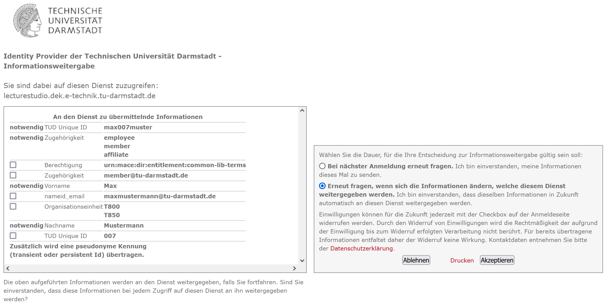
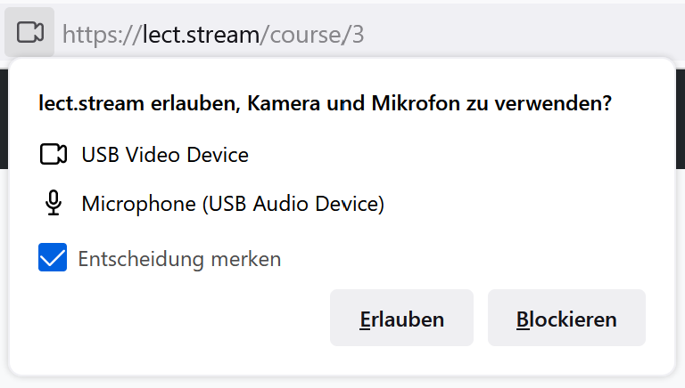
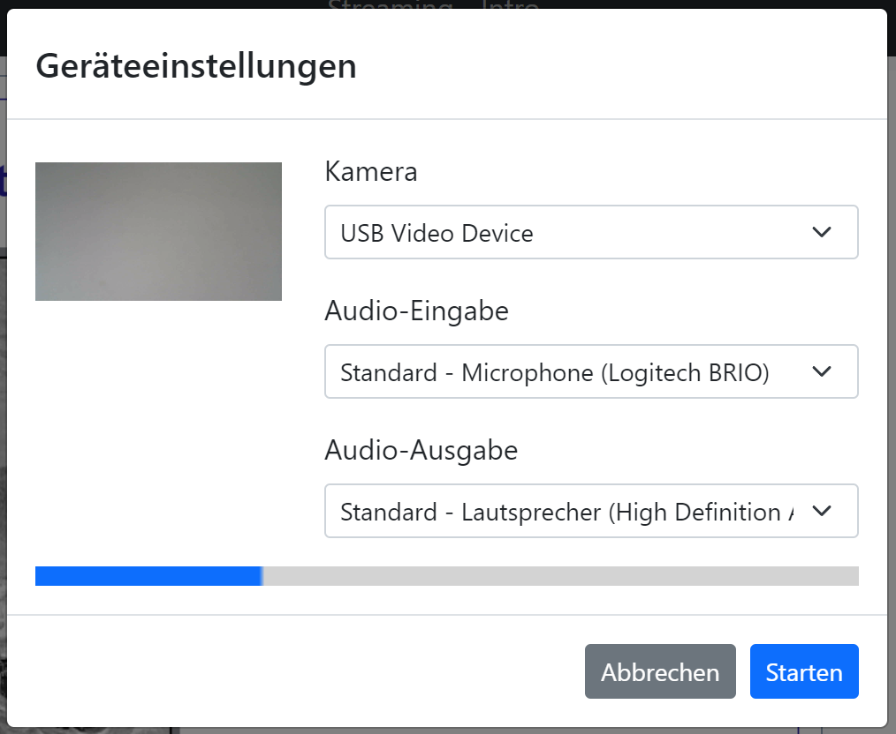
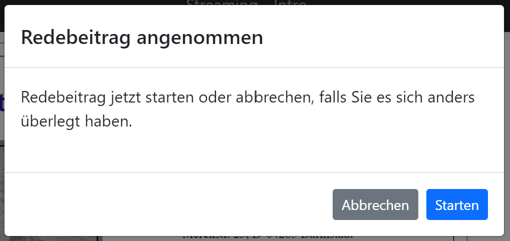
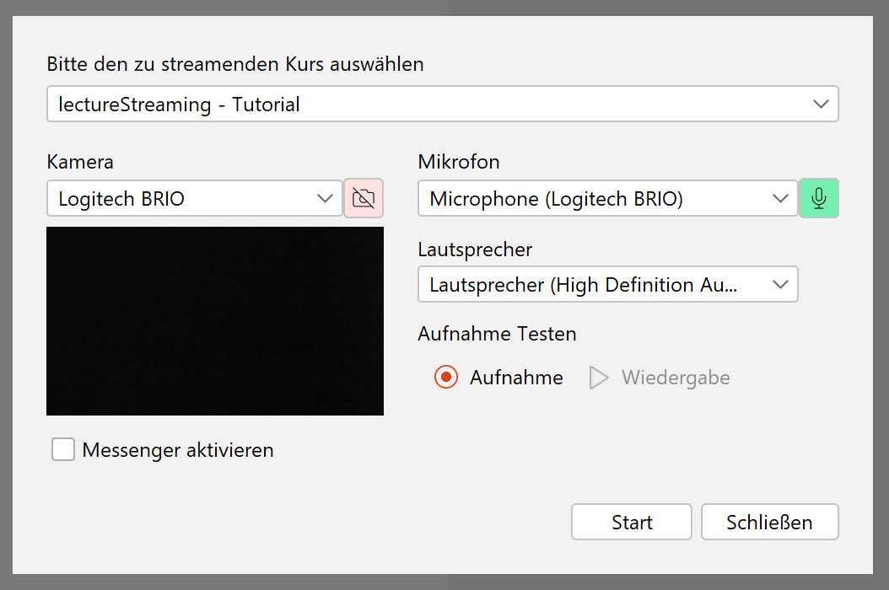

Copyright © 2022 Das lectureStudio-Team

Dieses Werk ist lizenziert unter einer Creative Commons Namensnennung - Weitergabe unter gleichen Bedingungen 4.0 International Lizenz
Historie
| Version | Datum | Bemerkung |
|---|---|---|
1.3.0 |
4. April 2022 |
Screenshots für die neue Oberfläche der Webseite angepasst. Kleine Änderungen in der Oberfläche von lecturePresenter beim Verwalten von Nachrichten und Meldungen. |
1.2.0 |
17. Januar 2022 |
„Stream starten“ aktualisiert und Abschnitte „Am Quiz teilnehmen“ und „Quizze“ eingeführt. Neue Einstellung: Auswahl eines Audio-Ausgabegeräts unter Chromium-basierten Browsern. |
1.0.0 |
14. Oktober 2021 |
Dokumenterstellung |
Einführung
lectureStreaming ist eine webbasierte Anwendung, mit der Sie an Echtzeit-basierten Kursen teilnehmen können. Sie müssen keine weitere Software installieren, da die Anwendung in Ihrem Browser läuft. lectureStreaming hebt sich von anderen Streamingplattformen ab, indem die präsentierten Folien samt Annotationen nicht als Bilder übermittelt werden, sondern die Folien als PDF und Annotationen als Vektorgrafiken. Damit wird eine bandbreitenschonende Übermittlung (Streaming) von Kursen erreicht.
Technische Anforderungen
Browser
lectureStreaming bietet Audio und Video in hoher Qualität unter Verwendung der in den Browser integrierten Unterstützung für WebRTC (Web Real Time Communication). WebRTC ist ein Standard, der von allen gängigen Browsern wie Chrome, Firefox, Safari und Safari Mobile unterstützt wird. Standardmäßig ist WebRTC im Browser aktiviert. Es kann jedoch vorkommen, dass Sie diese Funktion un-/absichtlich deaktiviert haben.
Sie können den Browser Ihrer Wahl auf WebRTC-Funktionalität testen unter: https://test.8x8.vc
Netzwerkverbindung
Der stabilste Internetzugang wird über ein LAN-Kabel bereitgestellt, aber auch WLAN funktioniert in der Regel. Ihre Internetverbindung sollte die folgenden Kriterien erfüllen: Mindestens 0.4 MBit/s Download- und 0.1 MBit/s Upload-Rate. Möchten Sie sich mit einer Kamera melden und sprechen, so wird eine Upload-Rate von mindestens 0.3 MBit/s vorausgesetzt.
Mikrofon und Kamera
Wenn Sie während eines Kurses sich melden und sprechen möchten, benötigen Sie ein Mikrofon, bzw. ein Headset. Wir empfehlen nicht die Verwendung externer Lautsprecher oder Mikrofone, die in Ihren Computer/Endgerät eingebaut sind. Diese können zu störenden Rückkopplungsgeräuschen und unerwünschten Hintergrundgeräuschen führen.
Wenn Sie während Ihres Redebeitrags in einem Kurs von anderen Teilnehmern gesehen werden sollen, benötigen Sie zusätzlich eine Kamera (Webcam). In diesem Fall ist in der Regel die in Ihrem Computer oder Endgerät eingebaute Kamera ausreichend.
Login
Der Login erfolgt beim Hochschulrechenzentrum (HRZ) der Technischen Universität Darmstadt über eine zentrale Web-Authentisierung per Single Sign-On (SSO). Jede/r Angehörige der TU Darmstadt hat eine TU-ID und ein Passwort, die den Zugang zu allen am SSO-System angeschlossenen Diensten ermöglicht. Das lectureStreaming ist an das SSO-System angebunden. Sobald Sie sich einmal am Single Sign-On-Server angemeldet haben, findet innerhalb einer Browser-Session keine weitere Authentifizierung statt. Ihr Passwort wird durch die zentrale Login-Seite geschützt, denn an angeschlossene Dienste werden die Login-Daten (Passwort) nicht weitergeleitet.
Um Kurse anzubieten oder an Kursen teilzunehmen, müssen Sie sich einloggen. Der Loginvorgang wird nachfolgend beschrieben.
-
Klicken Sie auf der Startseite auf den Button Einloggen. Sie werden auf die zentrale Loginseite der TU Darmstadt weitergeleitet (Abbildung 1). Geben Sie dort Ihre TU-ID und Passwort ein.
Abbildung 1. Zentrale Loginseite der TU Darmstadt -
Melden Sie sich das erste Mal an, so werden Sie nach der Informationsweitergabe gefragt (Abbildung 2). Die als
notwendigmarkierten Attribute können nicht abgewählt werden, da diese für die Funktion der Webseite und die Teilnahme an Kursen erforderlich sind. Alle anderen Attribute sind optional und können abgewählt werden. Aktivierte optionale Attribute werden nicht weiter verarbeitet.Abbildung 2. InformationsweitergabeStimmen Sie der Informationsweitergabe zu, so klicken Sie auf den Button Akzeptieren. Sie werden auf die Seite mit allen verfügbaren Kursen weitergeleitet.
| Klicken Sie auf Ablehnen, dann ist das Anmelden auf der Webseite nicht möglich. Als Dozent/in können Sie keine Kurse anbieten. Als Teilnehmer/in können Sie an Kursen nicht teilnehmen. |
Teilnehmer/innen
Teilnehmer/innen können keine Kurse anbieten. Sie nehmen passiv an Kursen teil, können aber auch ggf. aktiv mit Dozenten/innen interagieren, wenn Interaktionsfunktionen aktiviert wurden. Sie können andere Teilnehmer/innen in der Kursgruppe nicht beeinträchtigen. Im Folgenden wird gezeigt, wie Sie an Kursen teilnehmen.
|
Um gestreamte Kurse ansehen zu können, müssen Sie Netzzugang zum Datennetz der TU Darmstadt haben. Alle TU-Angehörigen haben folgende Optionen zum Netzzugang:
|
Hauptseite
Im aktuellen Entwicklungsstand ist die Seite (Abbildung 3) schlicht gehalten. Diese besteht im Wesentlichen aus zwei Bereichen, der Navigationsleiste und dem Bereich für den Inhalt des jeweils angesteuerten Links aus der Navigationsleiste.
Als Teilnehmer/in können Sie:
-
Alle angebotenen Kurse sehen.
-
An einem Kurs teilnehmen.
-
Einstellungen vornehmen.
Zu jedem Kurs werden Indikator-Icons angezeigt, je nachdem wie sich der aktuelle Status des Kurses ändert.
|
Der Kurs hat begonnen und wird übertragen. |
|
|
Textnachrichten sind für den Kurs aktiviert. |
|
|
Ein Quiz wurde gestellt. |
Am Kurs teilnehmen
Um an einem Kurs teilzunehmen, klicken Sie in der Kursliste auf diesen Kurs. Je nach Zustand des Kurses, ob der Kurs begonnen hat oder nicht, bekommen Sie entweder den Kurs samt Medien oder eine Meldung über den nicht verfügbaren Kurs angezeigt.
Nicht begonnene Kurse
Wenn Sie wissen, dass bald ein Kurs losgeht, dann können Sie auch diesen Kurs auswählen und bekommen dann automatisch den Kurs angezeigt, sobald dieser von Dozenten/innen gestartet wurde. Sie bekommen zunächst die Meldung in Abbildung 4 angezeigt.
Oberfläche
Eine Übersicht über die Oberfläche eines laufenden Kurses ist in Abbildung 5 gegeben. Die Oberfläche besteht aus drei Bereichen: Dem Präsentationsbereich für Folien samt Annotationen und Steuerelementen für die Medien, der Medienleiste rechts für die eingeschalteten Webcams sowie einem Eingabefeld für Textnachrichten und dem Bereich für die Beschreibung des Kurses ganz unten.
-
Der Präsentationsbereich füllt den freien Platz in der Oberfläche. Hier werden die präsentierten Folien gezeigt.
-
Die Steuerleiste enthält Bedienelemente für den laufenden Kurs.
Audio-Wiedergabe stumm schalten. Mit dem Regler daneben kann die Lautstärke der Wiedergabe angepasst werden.
Hiermit können Sie sich melden. Diese Funktion wird in Abschnitt Sich melden näher beschrieben.
Ein Quiz ist aktiv und kann durch einen Klick auf diesen Button angezeigt werden.
Chateingabe ein-/ausblenden.
Einstellungen für Mikrofon und Kamera vornehmen.
In den Vollbildmodus wechseln.
-
Zeigt das Kamerabild von Dozierenden. Das Bild ist nur zu sehen, wenn das Kamerabild tatsächlich übertragen wird. Bei ausgeschalteter Kamera wird dieses Element ausgeblendet.
-
Zeigt das Kamerabild von Teilnehmenden während eines Redebeitrags. Das Bild ist nur zu sehen, wenn der/die Teilnehmende die Kamera für den Redebeitrag aktiviert hat.
Teilnehmende, die den Redebeitrag führen, sehen hier ihr lokales Kamerabild.
-
Mit dem Eingabefeld für Textnachrichten können Sie Dozierenden Textnachrichten senden. Alle anderen Teilnehmer/innen können Ihre Nachricht nicht sehen. Dieses Eingabefeld ist nur sichtbar, wenn Dozierende diese Funktion aktiviert haben.
Automatische Wiedergabe von Medien
Browser (insbesondere Chromium-basierte Browser) können die automatische Wiedergabe von Audio und Video blockieren. In diesem Fall können Sie zwar die Folien sehen, aber den Ton sowie das Kamerabild von Dozierenden nicht hören bzw. sehen. Hierbei ist eine Interaktion mit dem Browser erforderlich.
In diesem Fall wird ein Dialog (Abbildung 6) angezeigt, um die Wiedergabe von Audio und Video des Dozierenden zu aktivieren.
Firefox
In Firefox kann eine Berechtigung für die automatische Wiedergabe von Medien erteilt werden. Navigieren Sie hierzu in die Adresszeile des Browsers und erteilen die Erlaubnis, siehe Abbildung 7.
Textnachrichten
Mit den Textnachrichten können Sie Fragen stellen, ohne Dozenten/innen in ihrem Vortrag zu unterbrechen. Navigieren Sie dazu in das Nachrichtenfeld [5], geben dann Ihre Frage ein und klicken auf Senden.
| Bei Veranstaltungen mit vielen Teilnehmern kann der Chat schnell unübersichtlich werden. Hier ist Disziplin von allen Teilnehmern gefragt. Nutzen Sie die Textnachrichten daher nur nach Aufforderung der Dozenten/innen oder gemäß den für die Veranstaltung geltenden Kommunikationsregeln. |
Am Quiz teilnehmen
Ein Quiz kann mit oder ohne einen laufenden Stream zum Kurs gestellt werden. Wird ein Quiz ohne einen gerade laufenden Stream gestellt, so wird das Quiz anstelle des Streams auf der Webseite angezeigt. Wenn ein Stream zum Kurs läuft, und ein Quiz gestellt wird, dann bekommen Sie einen zusätzlichen Button in der Steuerleiste zu sehen (Abbildung 8). Klicken Sie auf diesen Button, um das Quiz zu öffnen.
Die Oberfläche eines Quiz ist in Abbildung 9 zu sehen. Es handelt sich hierbei um ein Beispiel.
Wählen Sie die Antwortmöglichkeiten aus und klicken auf Senden, um die Antwort einzureichen.
Sich melden
Als Teilnehmer/in können Sie sich zu Wort melden. Die folgenden Schritte erläutern den Ablauf eines Redebeitrags.
-
Klicken Sie in der Steuerleiste auf den Button .
-
Wenn Sie sich zum ersten Mal für einen Redebeitrag melden, werden Sie aufgefordert, Ihrem Browser die Erlaubnis zur Verwendung des Mikrofons und optional der Kamera zu erteilen. Der Browser zeigt Ihnen einen Dialog, der nach der Kamera- und Mikrofonberechtigung fragt (Abbildung 10). Hier stehen alle verfügbaren Kameras und Mikrofone zur Auswahl.
Abbildung 10. Kamera- und Mikrofonberechtigungen für BrowserWählen Sie das Mikrofon und die Kamera aus, welche Sie für den Redebeitrag verwenden möchten. Klicken Sie dann auf Erlauben.
-
Anschließend bekommen Sie den Dialog für Geräteeinstellungen (Abbildung 11) angezeigt. In diesem Dialog können Sie nochmal Ihr gewünschtes Eingabegerät auswählen und überprüfen, ob es richtig funktioniert.
Abbildung 11. Geräteeinstellungen für RedebeitragAnschließend klicken Sie auf Starten.
Sie können Ihre Meldung auch Abbrechen.
-
Ihre Meldung wurde erfolgreich an den/die Dozenten/in gesendet. Dozierende entscheiden, wann und ob sie die Meldung annehmen.
-
Wurde Ihre Meldung angenommen, so werden Sie nochmal gefragt, ob der Redebeitrag nun beginnen kann (Abbildung 12).
Abbildung 12. Redebeitrag bestätigenFalls Sie es sich anders überlegt haben und die Meldung zurückziehen möchten, dann klicken Sie auf Abbrechen.
Um den Redebeitrag zu beginnen, klicken Sie auf Starten.
-
Sie können jetzt sprechen. Dozierende und alle Teilnehmer/innen können Sie hören und sehen, wenn die Kamera aktiviert wurde.
-
Den Redebeitrag beenden Sie durch erneutes Betätigen des Buttons .
Einstellungen
Unter Einstellungen können Sie im aktuellen Entwicklungsstand das Medienprofil auswählen und Geräteeinstellungen vornehmen.
Medienprofil
Das Medienprofil bietet zwei Optionen an. Je nach Auswahl, ändert sich die Benutzeroberfläche des besuchten Kurses.
Zu Hause
Die Oberfläche bietet alle zur Verfügung stehenden Funktionen wie Ansicht der präsentierten Folien, Wiedergabe von Ton und Kamerabild der vortragenden Person sowie Versenden von Nachrichten und Teilnahme an Umfragen an.
Hörsaal
Die Oberfläche erlaubt nur das Versenden von Nachrichten und die Teilnahme an Umfragen. Diese Option ist insbesondere dann zu aktivieren, wenn Sie den Vortrag in Präsenz im Hörsaal sehen.
Geräteeinstellungen
Diese Einstellungen (Abbildung 13) können Sie zum Beispiel nutzen, wenn Sie sich das erste Mal angemeldet haben und die Meldefunktion nutzen möchten. So können Kamera und Mikrofon vorab konfiguriert werden.
Haben Sie zuvor der Nutzung der Kamera zugestimmt und möchten diese nicht mehr aktiviert haben, so können Sie hier die Nutzung der Kamera deaktivieren, ohne in die Browsereinstellungen zu wechseln. Wählen Sie hierzu in der Kameraauswahl Keine aus.
In Chromium-basierten Browsern (z.B. Google Chrome, Opera, Microsoft Edge,…) kann das Audio-Ausgabegerät eingestellt werden. Browser wie z.B. Firefox unterstützen diese Einstellungsmöglichkeit noch nicht.
-
Hier ist das Kamerabild der ausgewählten Kamera zu sehen.
-
Hier kann das ausgewählte Mikrofon durch eine kurze lokale Aufzeichnung getestet werden, indem Sie kurz reinsprechen und danach die Aufnahme wiedergeben. Auf diese Weise kann festgestellt werden, ob das Mikrofon richtig funktioniert und der Aufnahmepegel akzeptabel ist.
-
Zeigt den sich verändernden Eingangs-Pegel des ausgewählten Mikrofons an. Hiermit können Sie die Mikrofon-Lautstärke überprüfen.
Dozenten/innen
Kurs anbieten
Um einen Kurs mit lecturePresenter streamen zu können, müssen Sie einen Kurs erstellt haben. Es können auch mehrere Kurse erstellt werden, wenn Sie mehrere Lehrveranstaltungen anbieten. Des Weiteren muss ein Zugriffstoken generiert werden, der Ihre lecturePresenter-Instanz gegenüber dem Streamingdienst authentifiziert. Wie Sie das bewältigen wird im Folgenden erklärt.
Kurs erstellen
Ein Kurs kann in wenigen Schritten erstellt werden.
-
Klicken Sie in der Navigationsleiste auf Kurs hinzufügen.
-
Füllen Sie die Felder mit ihren kursspezifischen Inhalten aus.
-
Anschließend klicken Sie auf Erstellen.
Zugriffstoken
Das Zugriffstoken wird benötigt, um lecturePresenter gegenüber dem Streamingdienst zu authentifizieren. Es handelt sich hierbei um eine zufällig generierte Folge von alphanumerischen Zeichen. Einen Zugriffstoken zu verwenden hat den Vorteil, dass Sie sich im Werkzeug lecturePresenter nicht mit Ihren Logindaten (TU-ID und Passwort) einloggen müssen und somit auf sichere Weise geschützte Web-Dienste nutzen können. Das Zugriffstoken verwalten Sie mit folgenden Schritten.
-
Klicken Sie in der Navigationsleiste auf Einstellungen und dann weiter auf Persönliches Zugriffstoken.
-
Um ein neues Zugriffstoken zu generieren, klicken Sie auf Neues Token erzeugen.
-
Sie bekommen Ihr neues persönliches Zugriffstoken angezeigt. Bitte kopieren Sie dieses Token, denn es wird Ihnen nicht nochmal angezeigt.
Haben Sie das Zugriffstoken verloren, gelöscht oder haben Bedenken hinsichtlich der Verwendung, dann können Sie sich jederzeit ein neues Zugriffstoken generieren. Dabei wird das alte Zugriffstoken gelöscht und mit dem neuen überschrieben. -
Starten Sie lecturePresenter und öffnen die Einstellungen über das Menü .
-
Navigieren Sie in den Stream-Tab.
-
Das Zugriffstoken in das Textfeld unter
Zugriffstokeneinfügen.Um zu überprüfen, ob das Zugriffstoken funktioniert, klicken Sie auf den Button Prüfen. Gehen Sie hierbei auch sicher, dass Sie eine Internetverbindung haben. Wurde das Zugriffstoken akzeptiert, so nimmt das Textfeld die Farbe Grün an. -
Sie können die Einstellungen wieder mit dem Button Schließen verlassen und sind nun bereit einen Stream zu starten.
Wenn Sie Bedenken hinsichtlich der Verwendung des Zugriffstokens haben, können Sie das Zugriffstoken löschen.
Stream starten
Sofern Sie einen Kurs und Zugriffstoken auf der Webseite erstellt haben, können Sie mit dem Streamen loslegen. In lecturePresenter haben Sie zwei Möglichkeiten einen Stream zu starten.
-
Über das Menü .
-
Über die Werkzeugleiste mit dem Button .
Sobald Sie einen Stream starten, wird zunächst ein Dialog wie in Abbildung 14 gezeigt.
Abbildung 14. Stream starten -
In der Auswahlliste werden alle von Ihnen erstellten Kurse aufgelistet. Wählen Sie hier den Kurs aus, der zu Ihrem aktuellen Vortrag passt.
-
Sie haben hier noch die Möglichkeit die richtigen Ein- und Ausgabegeräte einzustellen und diese zu testen. Zudem haben Sie die Wahl, ob Sie den Kurs mit eingeschaltetem Mikrofon oder eingeschalteter Kamera beginnen möchten.
-
Die Einstellung des Lautsprechers ist nur dann relevant, wenn Sie Redebeiträge annehmen. Das Audio von Redebeiträgen wird dann auf dem ausgewählten Lautsprecher wiedergegeben.
Falls Sie den Empfang von unidirektionalen Textnachrichten für den Kurs einschalten möchten, dann aktivieren Sie die Option
Messenger.All diese Funktionen lassen sich auch während des laufenden Streams ein- und ausschalten. -
Um den Stream zu beginnen, klicken Sie auf Start.
Statusindikatoren
lecturePresenter hat in der rechten oberen Ecke der Oberfläche Indikatoren für den aktuellen Status des Streamings integriert (Abbildung 15).
|
Zeigt an, ob ein Quiz aktiv ist. Daneben wird die Anzahl der Antworten angezeigt. Ein Teilnehmer kann nur einmal am aktiven Quiz teilnehmen. |
|
|
Zeigt an, ob Textnachrichten aktiviert sind. Daneben wird die Anzahl unbearbeiteter Nachrichten angezeigt. Textnachrichten werden im Abschnitt Empfang von Nachrichten näher beschrieben. |
|
|
Zeigt die Anzahl offener Meldungen an. Die Abwicklung wird im Abschnitt Meldungen näher beschrieben. |
|
|
Zeigt an, ob ein Stream läuft und wie viele Teilnehmende sich den Stream anschauen. |
Quizze
Quiz erstellen
lecturePresenter erlaubt es Ihnen, während der Vorlesung in Echtzeit Quizze zu starten, an denen die Teilnehmer über einen Browser teilnehmen können. Um ein Quiz zu erstellen, müssen Sie dieses zunächst anlegen. Wählen Sie dazu den Menüpunkt Vortrag Quiz erstellen. Es öffnet sich eine Bedienoberfläche (Abbildung 16), über die Sie das Quiz erstellen.
Geben Sie eine Quizfrage ein [1]. Verschiedene Formatierungsmöglichkeiten sind in der Werkzeugleiste [2] zu finden. Die Quizfrage wird mit HTML formatiert. Auf diese Weise wird die Frage in allen Browsern mit der gleichen Formatierung angezeigt.
Wählen Sie den Quizstil [3] aus. Es stehen drei Stile zur Verfügung; Multiple choice (Mehrfachauswahl), Eine Antwort und Numerisch.
Multiple Choice und Eine Antwort
Die Antwortmöglichkeiten werden im Feld [4] als Text eingegeben. Neue Antwortmöglichkeiten erstellen Sie mit dem Button [5] oder mit der Taste Tab . Um eine Antwort zu löschen, klicken Sie den Button [6]. Mit den aufwärts und abwärts Buttons [7] können Sie die Reihenfolge der Antworten verändern.
Numerische Antworten
Für Fragen vom Stil Numerisch können Sie einen oder mehrere Einträge hinzufügen. Jede Antwortmöglichkeit (Abbildung 17) besitzt eine Beschreibung [1] und ein erlaubtes Werteintervall in Form von Min- und Max-Feldern[2][3], für die Eingabe bei der Teilnahme am Quiz. Numerische Antworten lassen sich ebenfalls sortieren und entfernen, wie im vorherigen Abschnitt beschrieben.
Nachdem Sie alles Gewünschte eingegeben haben, haben Sie die Möglichkeit das Quiz zu speichern, bevor Sie das Quiz freigeben. Zum Speichern drücken Sie den Button Quiz speichern. Um das Quiz freizugeben, klicken Sie Quiz stellen.
Sobald das Quiz erfolgreich freigegeben wurde, öffnet sich ein neues Dokument mit dem Namen Quiz und das Quiz ist jetzt für die Teilnehmer über einen Browser zugänglich. Das Quiz-Dokument wird in Echtzeit aktualisiert während die Antworten eintreffen. Um die Quizergebnisse anzuzeigen, wechseln sie auf die nächste Folie des Quiz-Dokuments.
Quiz aus der Quizsammlung auswählen
Um den Teilnehmern eine ihrer angelegten Fragen aus ihrer Quizsammlung zu stellen, wählen Sie den Menüpunkt . Es öffnet sich die Fragenliste, in der Sie bestehende Fragen bearbeiten, löschen oder stellen können. Wählen Sie die gewünschte Frage aus und klicken Quiz stellen.
Quiz-Modi
Ein Quiz kann mit oder ohne einen laufenden Stream gestellt werden. Wird ein Quiz ohne einen gerade laufenden Stream gestellt, so wird das Quiz anstelle des Streams auf der Webseite angezeigt. Ein aktives Quiz kann auf zwei Wegen beendet werden: Durch den Menüpunkt oder den Button Beenden unter den Vorschaufolien.
Stellen Sie ein Quiz während der Stream zum Vortrag läuft, so sehen Sie unter den Vorschaufolien einen zusätzlichen Button Teilen. Dieser Button ist dafür da, um die Quizergebnisse mit den Teilnehmern zu teilen. Denn die Teilnehmer können die Ergebnisse so lange nicht sehen, bis diese geteilt wurden. Die Ergebnisse können auch nur dann geteilt werden, wenn Sie das Quiz beenden.
Quizergebnisse können Sie mit folgenden Schritten den Teilnehmern präsentieren:
-
Das Quiz z.B. mit dem Button Beenden stoppen.
-
Mit dem Button Teilen die Ergebnisse an die Teilnehmer freigeben.
-
Die Folien mit Diagrammen, die alle Antworten zusammenfassen, auswählen und präsentieren.
Empfang von Nachrichten
Textnachrichten können empfangen werden, wenn die Funktion Messenger aktiviert wurde. Empfangene Nachrichten sind in lecturePresenter unter der Folienanzeige zu sehen (Abbildung 19). Eine Textnachricht enthält den Vor- und Nachnamen des/der Verfassenden, die Uhrzeit und den Text der Nachricht selbst.
Während eines Vortrags mit sehr vielen Teilnehmenden kann es vorkommen, dass Sie eine große Anzahl von Nachrichten bekommen. Wenn Sie auf eine Nachricht eingegangen sind oder eine Nachricht für unwichtig halten, dann kann diese mit dem Button entfernt werden.
Mit dem Button kann eine neue Folie mit dem Text der empfangenen Nachricht erstellt werden. Diese Folie wird in lecturePresenter sofort angezeigt, aufgezeichnet und im Stream verteilt, sofern Sie den Vortrag aufzeichnen bzw. streamen.
Meldungen
Meldungen sehen Sie dort, wo auch Textnachrichten in lecturePresenter angezeigt werden, unter der Folienanzeige (Abbildung 20). Eine Meldung enthält den Vor- und Nachnamen des/der Meldenden und die Uhrzeit. Sie können eine Meldung annehmen oder ablehnen . In beiden Fällen wird die Meldung aus der Liste entfernt.
Haben Sie eine Meldung angenommen und der/die Meldende hat den Redebeitrag gestartet, dann sehen Sie in lecturePresenter rechts oben über der Folienvorschau den Namen und das Kamerabild, falls aktiviert, des/der Meldenden sowie Steuerelemente für den Redebeitrag. Zu diesem Zeitpunkt ist auch der/die Meldende für Sie und alle Teilnehmer/innen zu hören.
Audio und Video des Redebeitrags können Sie steuern.
|
Schaltet den Ton des/der Meldenden für Sie und alle Teilnehmer/innen stumm. Durch erneutes Betätigen kann der Ton wieder eingeschaltet werden. |
|||
|
Schaltet das Kamerabild des/der Meldenden für Sie und alle Teilnehmer/innen stumm. Durch erneutes Betätigen kann das Kamerabild wieder eingeschaltet werden.
|
Der Redebeitrag wird beendet durch:
-
Klicken auf Beenden in der Steuerleiste.
-
Meldende selbst.